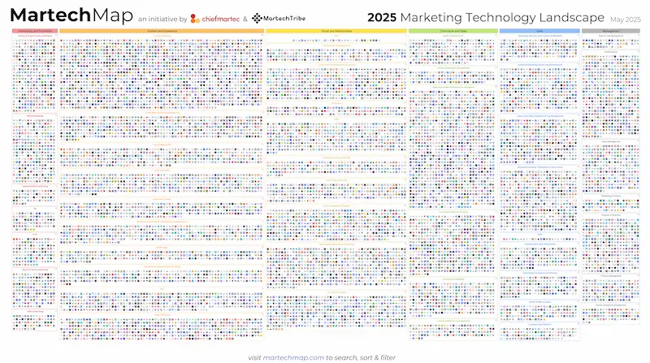

How Is Marketing Impacting the Environment?
Part 2: Eco-Conscious Marketing
July 24, 2026
In the first part of this series, we explored how marketing campaigns work. We looked at the three essential phases of the customer journey: Curiosity, Enlightenment, and Commitment. We looked at what it takes to build a successful campaign that moves your customer from total unawareness to a place of deep trust and, eventually, a decision to act.
By looking at the complete journey of the customer, we began to see that every piece of marketing collateral that needs to get created to move your customer through that journey, has a footprint.
When we think about the environmental impact of marketing, our minds often go to the most obvious culprits. We think of the free branded giveaways that end up in the trash can, the plastic wrap on a new product, or the stack of flyers left on a community bulletin board. This is the "visible" impact: the tangible, physical waste that we can see and touch. However, if we only look at what is visible, we are missing a massive portion of the story.
The Weight of Physical Marketing
The scale of physical marketing waste is staggering. Think about the sheer volume of materials required to keep a brand in the public eye. From vinyl billboards that line our highways to the promotional flyers handed out at events, the cumulative effect is enormous.
According to the Ellen MacArthur Foundation, vinyl billboards, promotional flyers, and packaging collectively account for approximately 12 MegaTons of plastic annually. That is not just a statistic; it is a mountain of non-biodegradable material that enters our ecosystems, breaks down into microplastics, and persists for centuries.
Beyond the waste itself, there is the cost of production. To create the physical assets of a marketing campaign, we rely on a heavy extraction of natural resources. This includes:
- Water and Electricity: The manufacturing processes for paper, plastic, and textiles are incredibly resource-intensive as well as data centers that hold and process information.
- Precious Metals: Every device we use to create, manage, and consume marketing—from our smartphones and computers to AI technologies—relies on the extraction of metals like cobalt, copper, gold, lithium, and various rare earth metals.
- Chemical Pollution: The printing industry often relies on hazardous chemicals, including Volatile Organic Compounds (VOCs), which can contribute to air pollution and health risks.
If you have ever watched the "Story of Stuff," you likely have a foundational understanding of how products are made and the pollution they leave in their wake. Marketing is simply an accelerant for this cycle. It is the tool used to drive the demand that keeps this extraction and pollution loop spinning.
The Scale of Exposure
To understand why this impact is so significant, we have to look at the frequency of interaction. We are living in an era of unprecedented sensory overload. The average person comes across between 6,000 and 10,000 brand messages every single day.
These messages arrive from every direction: television, the internet, social media feeds, billboards, radio, podcasts, and printed items. This constant barrage requires a constant stream of content. To keep up with this demand, businesses must continuously produce more: more packaging, more flyers, more physical mailers, and more promotional giveaways.
This cycle creates a relentless pressure on our resources. The more touchpoints in our marketing strategy, the more waste we generate.
Moving From Physical to Digital
It is easy to point at a plastic giveaway and see the problem. But there is a second part to this story that remains largely invisible to the naked eye.
As we shift our marketing strategies toward digital platforms, many businesses assume they are "going green." There is a common misconception that digital marketing is weightless; that because there is no physical paper or plastic, there is no impact.
This is a dangerous illusion.
The digital world is not an ethereal realm of clouds and signals; it is built on a foundation of massive, energy-hungry hardware and physical infrastructure.

When these elements are aligned, they immediately ignite interest.
Phase 2: Enlightenment: Building the Foundation of Trust
Once you have captured their attention, you cannot simply jump to the sale. If you do, you bypass the most critical part of the relationship, which is enlightenment.
Enlightenment is the stage where curiosity turns into understanding. This is where the customer moves from "What is this?" to "How does this work, and why should I care?" They are looking for depth. They want to know the cost, the science, the benefits, and the potential side effects. They are making sure to do their due diligence before they make a purchase.
To facilitate enlightenment, you need "enlightenment collateral." These are deeper, more educational resources that allow you to demonstrate your value and authority. These are items like:
- Newsletters
- Nurture email sequences
- Case studies
- Testimonials
- In-depth website pages
- White papers
- Webinars
- Online courses
- Podcasts
- Video presentations
- Brochures
- Books
This phase is about providing the "why" and the substance that turns a casual observer into a potential client.
Phase 3: Commitment: The Decision to Act
The third and final phase is commitment. At this point, the customer is enlightened; they understand your value and they trust your expertise. However, they are often standing on the edge of a decision, wondering: "Is this the right move for me right now?"
The commitment phase is where you bridge the gap between interest and action. This is where you explicitly ask for the sale. It is not about being pushy; it is about providing the clarity needed to make a confident decision.
The messaging in this stage is remarkably simple. As a trained StoryBrand Certified Guide, we often use a specific formula to help businesses ask for the investment: "If you are struggling with [Problem X], buying [Solution Y] is the right decision."
The tools for this phase include things like:
- Pitch decks
- Sales presentations
- Formal proposals
- Pricing guides
- Direct sales emails
- Follow-up videos
When you provide affirmation with these tools, you give your customer the permission they need to move forward.
These three stages of the customer journey are based on proven principles from StoryBrand. They give you a clear path to attracting new customers so you can grow your bisiness. To get a step-by-step guide to building a successful marketing campaign, we recommend reading Donald Miller's book, Marketing Made Simple.
The Environmental Connection
By understanding these three stages—Curiosity, Enlightenment, and Commitment—you can see the the full scope of a marketing campaign. You can see the sheer volume of assets required to move a human being from a stranger to a loyal customer.
And here is the realization that brings us to the core of this series: every single one of these assets has a footprint. Whether it is the energy required to host a webinar, the physical waste of a printed brochure, or the carbon cost of shipping packaging, your marketing campaign is an active participant in the consumption of our planet's resources.
Now that we know what a campaign looks like, we can begin to ask the most important question: How is this impact affecting our world, and how can we do it better?